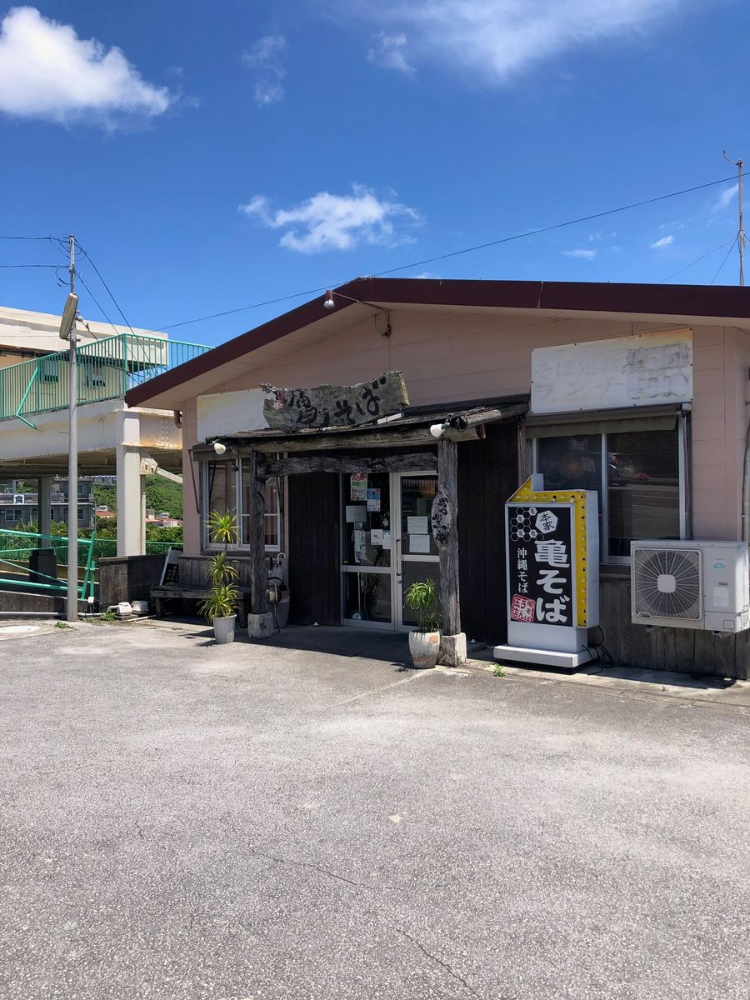
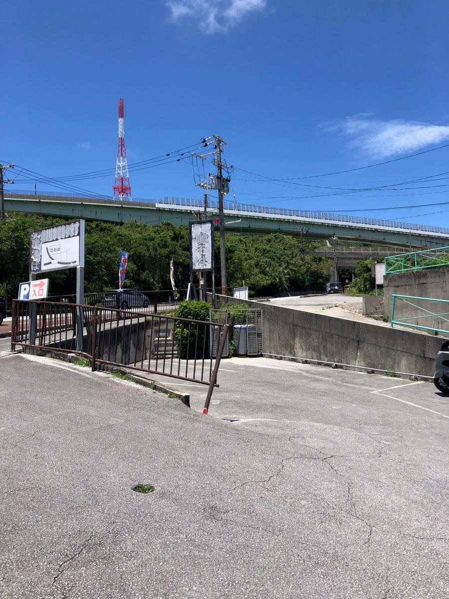
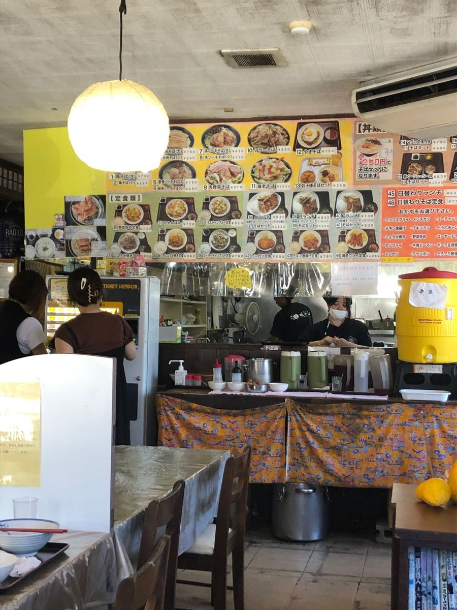
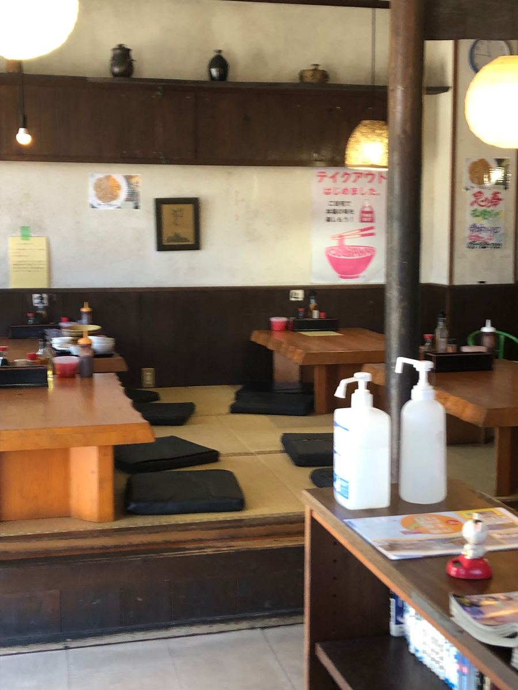
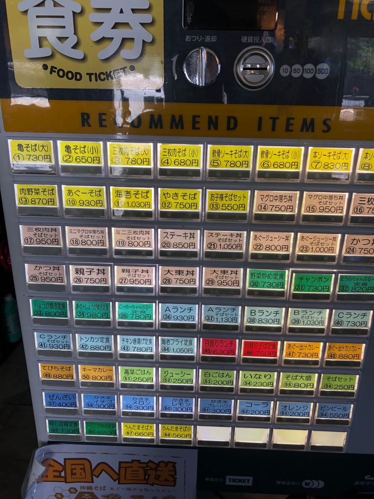
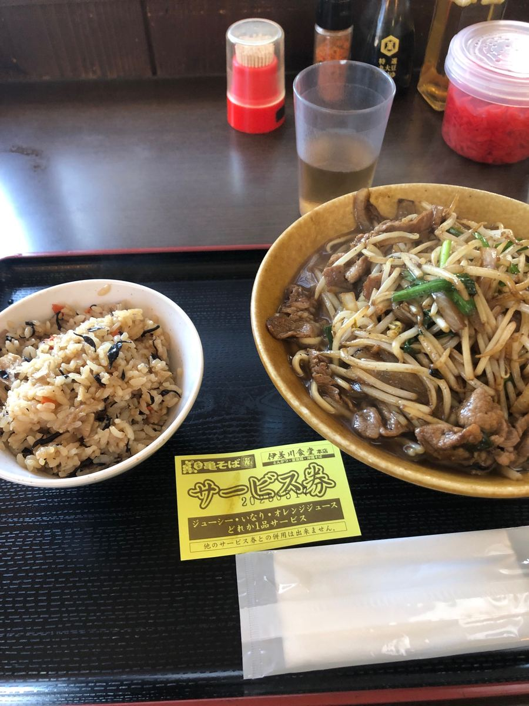
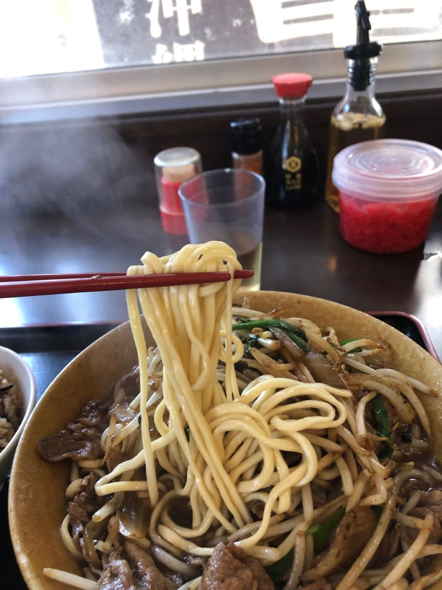

這次的沖繩麵巡禮，去了位在西原町池田的「本家龜麵 雲玉店」😄2025年5月吃的😆

青空下立著歷經歲月的看板，以及使用木材的入口，是令人印象深刻的外觀。路邊的大看板上還標示了停車場的指引。

之前在名護市的「伊差川食堂」吃沖繩麵時拿到了一張單品招待券。翻到背面一看，說這家「本家龜麵 雲玉店」也能使用，所以這次就帶著那張招待券來造訪了😁

一進店裡就擠滿了在地客人。店內有桌位和和式座位，扎根在地的氣氛很棒。不愧是龜麵，擠滿了在地客人呢😆


看入口的售票機，不只有沖繩麵，定食、丼飯、咖哩等菜單都相當豐富。這次點的是「阿古豬麵」930日圓。然後用招待券加點了沖繩炊飯（Jushi）。沖繩麵配沖繩炊飯的組合果然令人開心👍

和從「阿古豬麵」這個名字想像的一碗有點不同，端出來的是放了豆芽菜、洋蔥、豬肉炒蔬菜、像是蔬菜麵的一碗😄
先照例喝一口湯。
阿古豬高湯再加上肉類蔬菜炒所釋出的鮮味，變成味道偏濃的湯頭。阿古豬高湯與炒豬肉、蔬菜的高湯融合得很好。是普通的好吃👍
接著吃麵。麵條是細直麵，口感稍微偏軟。和肉類蔬菜炒一起吃很順口，也與偏濃的湯頭很融合。

配料是豆芽菜、洋蔥、豬肉炒蔬菜。可以連蔬菜一起好好吃到，豬肉與蔬菜的鮮味也加進了湯裡。雖然跟從「阿古豬麵」這個名字想像的樣子不同，但作為蔬菜麵是普通好吃的一碗😋
用招待券加點的沖繩炊飯也一起好好享用了。從之前的伊差川食堂接到這次的雲玉店的招待券，這點也很有沖繩麵巡禮的味道，很有趣呢😁
評分（9分/15分）：阿古豬高湯加上肉類蔬菜炒的鮮味，味道偏濃的湯頭令人印象深刻。麵條是偏軟的細直麵。和想像中的「阿古豬麵」不同，是像蔬菜麵的一碗，但有著龜麵一貫的穩定感，普通地好吃。難怪擠滿了在地客人😄
麵：★★★☆☆（3）
湯頭：★★★☆☆（3）
配料：★★★☆☆（3）